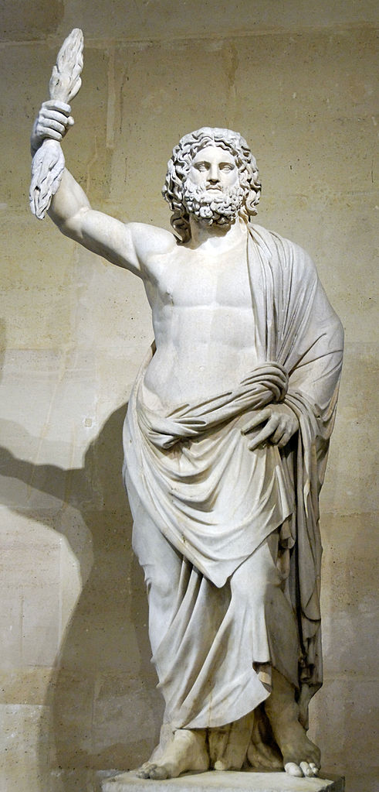
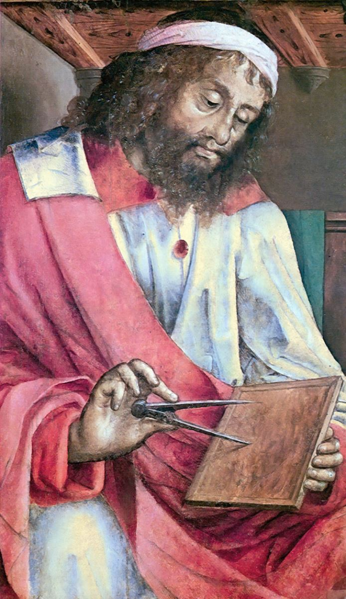
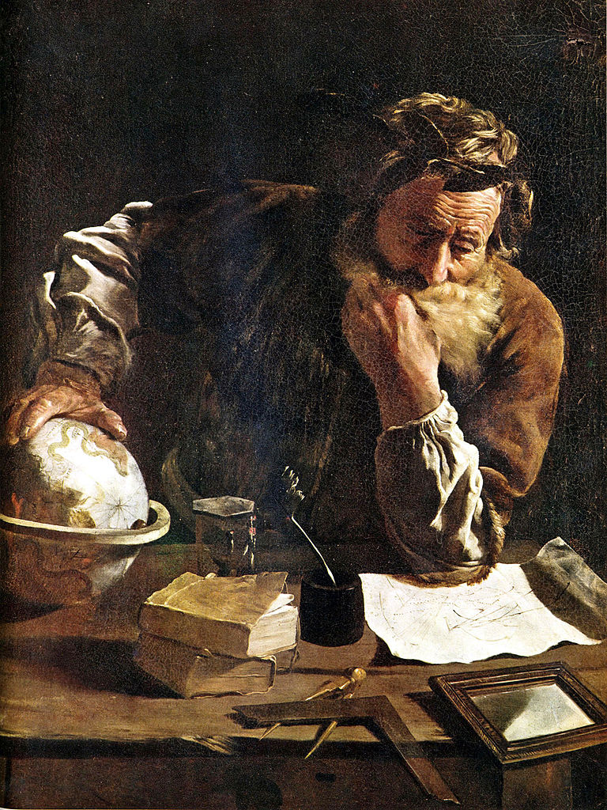

Religia vechilor greci
Religia vechilor greci beneficia de un panteon bogat. Grecii erau politeiști („polis” = mai mulți, „theos” = zeu), adică credeau în existența mai multor zei; o altă caracteristică importantă a religiei grecești este antropomorfismul („antrophos” = om, „morphé” = formă), adică zeii se asemănau oamenilor la trup și la comportament, dar erau nemuritori. Sediul zeilor era pe Muntele Olimp, cel mai înalt munte din Grecia. Numeroase referiri la panteonul grecesc găsim în Iliada și Odiseea lui Homer.
În fruntea ierarhiei se afla Zeus. Născut din Rheea și Cronos, Zeus devine renumit pentru luptele și curajul său. El deținea puterea supremă, stăpân al cerului și al tunetului, fiind numit părinte al zeilor și al oamenilor. Echivalentul lui Zeus la romani era Jupiter.

{kind=link}
Athena era zeița înțelepciunii, a meșteșugurilor și a războiului, de aceea ea era venerată ca ocrotitoare a eroilor. În panteonul roman corespondentul său era Minerva. Dionysos era zeul vinului și al vegetației, corespondentul său în lumea romană fiind Bacchus. Afrodita era zeița frumuseții la greci, după cum Venus era adorată în aceeași postură la romani. Hades era zeul morții, similar lui Pluto la romani.
Alte zeități importante erau Demetra (zeița agriculturii și a fertilității), Eros (zeul iubirii), Ares (zeul războiului), Asclepios (zeul medicinei), Hephaistos (zeul focului) ș.a. Pe lângă cultul zeilor, grecii aveau un cult al eroilor care deveneau drept răsplată pentru faptele lor semi-zei, cum este exemplul lui Hercule sau Prometeu. Zeilor li se ridicau temple și li se adresau rugăciuni, li se aduceau ofrande și sacrificii sau le erau consacrate diverse întreceri sportive.
Sărbătorile grecilor erau numeroase, între care cele mai renumite erau întrecerile și jocurile olimpice. Jocurile olimpice se organizau din 4 în 4 ani, pe timpul verii, la Olympia (în nord-vestul Peloponesului), începând cu anul 776 î.Hr. și până în anul 393, fiind desființate de împăratul roman Teodosiu I. La aceste jocuri puteau participa doar bărbații, atât ca și concurenți, cât și ca spectatori. Jocurile se desfășurau pe o durată de 7 zile, timp în care concurenții participau la 10 probe iar câștigătorii erau premiați cu coronițe din frunze de măslin.
Alte jocuri grecești cunoscute erau Jocurile Phytice din Delphi (în cinstea lui Apollo), Jocurile din Nemeea (în cinstea lui Heracles) sau Jocurile Istmice din Corint (în cinstea lui Poseidon).
Grecii vor prelua din lumea orientală diverse elemente ale științei pe care le vor dezvolta ulterior în cadrul diferitelor curente filosofice. Științele și filosofia se întrepătrund foarte mult în mentalitatea grecilor, ele începând să fie tratate ca doctrine separate de prin secolul al V-lea î.Hr. Una din regiunile considerate centru al științei grecilor era Ionia, pe țărmul Mediteranei, în vestul Asiei Mici. Se remarcă în astronomie Thales din Milet și Aristarh. În matematică și geometrie se disting Euclid, Arhimede și Pitagora.

Euclid de Justus van Gent (secolul al XV-lea)
{kind=link}
Și astăzi, absolvenții facultăților de medicină depun Jurământul lui Hipocrate, care este un adevărat cod deontologic. În domeniul geografiei îl amintim pe Strabon cu „Rerum Geographicarum” (Geografia). Istoria și filosofia sunt domenii în care grecii se remarcă în mod deosebit. Herodot și-a câștigat apelativul de „părintele istoriei” datorită operei sale „Historiai” - Istorii, rodul observațiilor și informațiilor adunate în diversele călătorii întreprinse. Un alt istoric al lumii grecești este Tucidide, de la care ni s-a păstrat „Istoria războiului peloponesiac”.

{kind=link}
Opera lui Tucidide este un progres din punct de vedere al științei și al veridicității celor relatate, Tucidide fiind martor direct la faptele descrise și axându-se pe derularea evenimentelor, fără a le încărca de elemente fantastice. Dintre filosofi, îi enumerăm pe Heraclit din Efes, Democrit, Socrate, Platon, Arhimede, Aristotel. Heraclit din Efes se pare că ar fi autorul aforismului „Panta rei”, adică „Totul curge” (cu continuarea „nimic nu rămâne neschimbat”). Socrate a fost cel care a afirmat „Singurul lucru pe care îl știu este că nu știu nimic”.
El nu a lăsat nici o operă scrisă, ceea ce ni s-a păstrat din afirmațiile sale parvine din scrierile lui Platon sau Xenofon. Va muri condamnat să bea o cupă cu cucută (plantă otrăvitoare), drept pedeapsă pentru exprimarea ideilor sale contrare celor ale conducătorilor Atenei. Platon a fost discipolul lui Socrate; el a fost cel care a pus bazele Academiei din Atena, prima instituție de învățământ superior din lumea occidentală. Aristotel, ucenicul lui Platon, a fost un adevărat spirit enciclopedic. Datorită cugetărilor sale, grupate în opera „Corpus Aristotelicum”, astăzi este considerat un clasic al filosofiei universale.